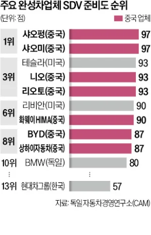

중국 내수는... 어떤곳일까
현대차 13위인거 보면 정확한 자료인듯

중국 내수는... 어떤곳일까
현대차 13위인거 보면 정확한 자료인듯
피로 써내려간 안전지침 적용하면 피 아낄 수 있는데 왜 우리 피날 때까지 적용안하는지는 몰?루 심지어 정차된 차 꼬라박고 판매량도 떨어지면서 피흘리는 중ㅋㅋㅋㅋㅋ
저 순위가 완성되니까 내놓은거잖아
저번에 출장갔는데 전기차만 보여서 물어보니까
내연기관차는 신고하는데 1년이상 걸리고 이것저것 비싸서 부자 아니면 안탄다고 하던데
번호가 안나온다고 하는데 그말인듯
어짜피 자국 산업 키워줄겸 전기차 밀어주는거지
준비도는 애매한지표긴한데 현대는 확실히 망했음
저거봐... 1에서 10위 점수차이보다 10위랑 13위 차이가 어마무시하구만...
샤오미가 1위라고?? 아닌거 같던대? 사람 겁나게 뒤지더만
여론은 이런데 왜 디스플레이 제어는 극혐하는거지 ㅋㅋ 하드웨어가 나쁜게 아닌데
국토부는 따라가기라도 해야하는데
썬팅부터해서 지지부진이지